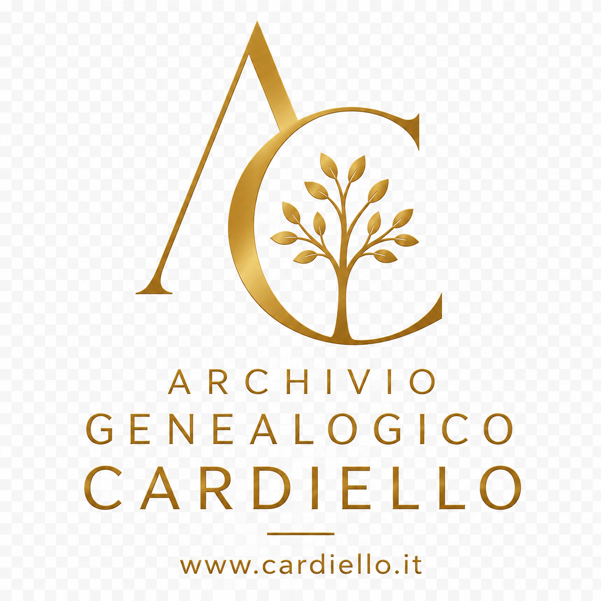

Archivio dedicato alla ricostruzione genealogica delle famiglie Cardiello documentate a San Pietro al Tanagro e nelle successive discendenze.
"Ognuno di noi è il risultato di una storia iniziata molto prima della propria nascita."
L'Archivio Genealogico Cardiello nasce con l'obiettivo di raccogliere, conservare e rendere accessibile la memoria storica delle famiglie Cardiello documentate a San Pietro al Tanagro e nei territori collegati.
Le ricerche condotte sui registri parrocchiali, sugli archivi civili, sui documenti catastali e sulle fonti storiche hanno consentito di identificare numerosi nuclei familiari già presenti nella comunità nella seconda metà del XVII secolo.
Il progetto è in continua evoluzione e mira alla ricostruzione delle diverse discendenze, alla conservazione delle fonti documentarie e alla valorizzazione della storia familiare attraverso documenti, fotografie e testimonianze.